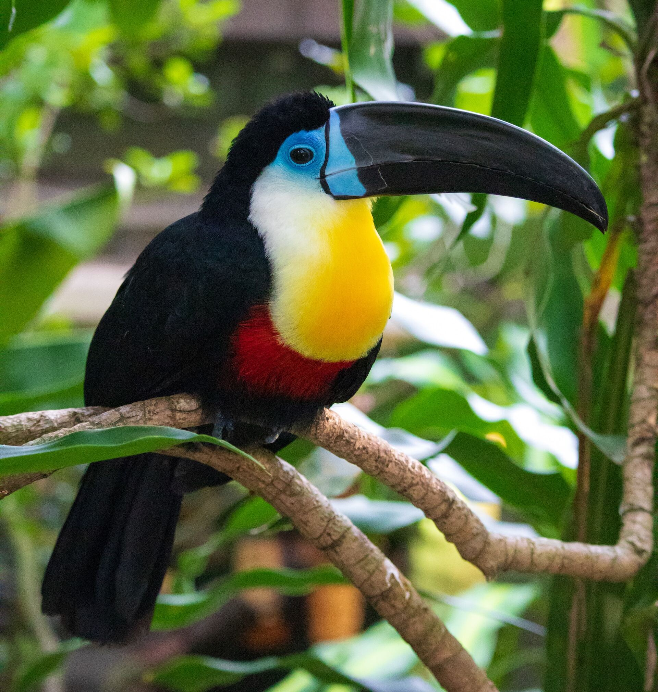

Toucan Conservation Initiatives
What is being done to protect the Toucans?
Toucan conservation efforts have gained traction in recent years as researchers and environmentalists acknowledge the critical role these fascinating birds play in sustaining healthy ecosystems. One of the main goals of these projects is to protect and restore toucans' native habitats, notably in the rainforests of Central and South America, where these birds are most popular. Toucans face the most serious challenges from deforestation and habitat loss, and conservationists are working continuously to address these concerns through reforestation and the construction of protected areas.
Organizations helping in Toucan conservation
Toucan Behavior and Communication
Toucans rely on more subtle kinds of communication, such as synchronized movements within groups. These birds frequently participate in synchronized flying patterns and group perching, which serve not only as indicates of unity but also aid in the upholding of social relationships and strengthening of territorial borders. Toucans will also utilize physical displays as part of their communication arsenal. They may participate in bill-fencing, which involves two toucans softly tapping their bills together, potentially to communicate or establish dominance across the group. They also utilize body language to communicate with their fellow toucans, such as puffing out their feathers or changing their body position. These behaviors have been observed and documented by researchers studying toucans in their natural habitats.